Bayesian Project#
Descripción#
age: Edad del paciente.
sex: Sexo del paciente.
cp: Tipo de dolor torácico experimentado.
trestbps: Presión arterial en reposo al ingreso en el hospital.
chol: Medición del colesterol sérico.
fbs: Indicador de si el azúcar en sangre en ayunas es superior a 120 mg/dl.
restecg: Resultados del electrocardiograma en reposo.
thalach: Frecuencia cardíaca máxima alcanzada durante la prueba de esfuerzo.
exang: Presencia de angina inducida por el ejercicio.
oldpeak: Depresión del segmento ST inducida por el ejercicio relative al reposo.
slope: La pendiente del segmento ST durante el ejercicio pico.
ca: Número de vasos principales visibles por fluoroscopia.
thal: Un tipo de talasemia o resultado de una prueba de esfuerzo con talio.
num: Diagnóstico de enfermedad cardíaca (variable objetivo).
Carga e identificación#
Librerías#
Carga del dataset#
heart_disease = fetch_ucirepo(id=45)
df = heart_disease.data.original
df.shape
(303, 14)
df.head()
| age | sex | cp | trestbps | chol | fbs | restecg | thalach | exang | oldpeak | slope | ca | thal | num | |
|---|---|---|---|---|---|---|---|---|---|---|---|---|---|---|
| 0 | 63 | 1 | 1 | 145 | 233 | 1 | 2 | 150 | 0 | 2.3 | 3 | 0.0 | 6.0 | 0 |
| 1 | 67 | 1 | 4 | 160 | 286 | 0 | 2 | 108 | 1 | 1.5 | 2 | 3.0 | 3.0 | 2 |
| 2 | 67 | 1 | 4 | 120 | 229 | 0 | 2 | 129 | 1 | 2.6 | 2 | 2.0 | 7.0 | 1 |
| 3 | 37 | 1 | 3 | 130 | 250 | 0 | 0 | 187 | 0 | 3.5 | 3 | 0.0 | 3.0 | 0 |
| 4 | 41 | 0 | 2 | 130 | 204 | 0 | 2 | 172 | 0 | 1.4 | 1 | 0.0 | 3.0 | 0 |
df.dtypes
age int64
sex int64
cp int64
trestbps int64
chol int64
fbs int64
restecg int64
thalach int64
exang int64
oldpeak float64
slope int64
ca float64
thal float64
num int64
dtype: object
Identificando NAs#
total = len(df)
null_counts = df.isna().sum()
null_percent = (null_counts / total) * 100
missing_summary = pd.DataFrame({
"Nulos": null_counts,
"Porcentaje (%)": null_percent.round(2)
})
print("=== Resumen de valores nulos ===")
print(missing_summary)
plt.figure(figsize=(8,4))
sns.barplot(x=missing_summary.index, y=missing_summary["Porcentaje (%)"], hue=missing_summary.index, palette="viridis", legend=False)
plt.title("Porcentaje de valores nulos por variable")
plt.ylabel("Porcentaje (%)")
plt.xlabel("Variable")
plt.xticks(rotation=45)
plt.show()
=== Resumen de valores nulos ===
Nulos Porcentaje (%)
age 0 0.00
sex 0 0.00
cp 0 0.00
trestbps 0 0.00
chol 0 0.00
fbs 0 0.00
restecg 0 0.00
thalach 0 0.00
exang 0 0.00
oldpeak 0 0.00
slope 0 0.00
ca 4 1.32
thal 2 0.66
num 0 0.00
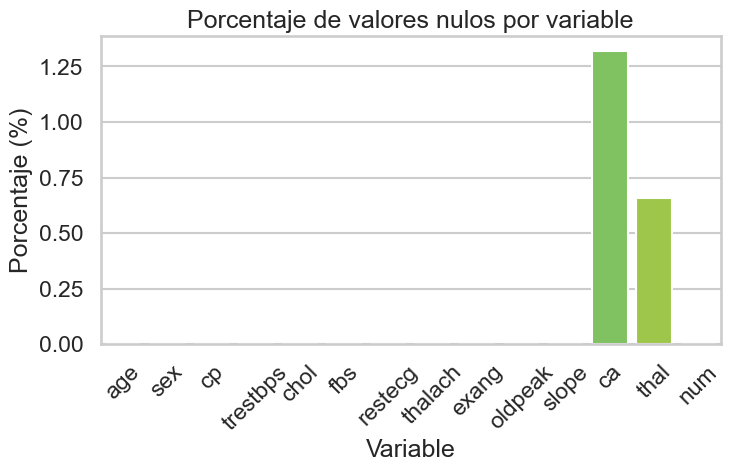
# --- Mapa de calor por filas ---
missing_matrix = df.isnull()
plt.figure(figsize=(12,4))
sns.heatmap(missing_matrix, cmap="viridis", cbar=True, xticklabels=True)
plt.title("Mapa de calor de valores faltantes por fila", fontsize=14)
plt.xlabel("Columnas")
plt.ylabel("Índice de filas")
plt.show()
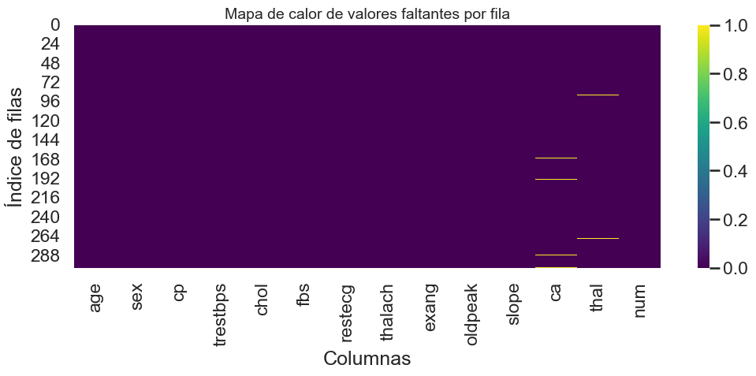
Nuestro dataset contienemente unicamente valores de NA unicamente en dos variables y con un porcentaje menor al 1.5% así que simplemente imputaremos por moda las filas con valores faltantes pues no introducirá sesgo significativo para nuestro análisis y modelado.
df = df.fillna({
'ca': df['ca'].mode()[0],
'thal': df['thal'].mode()[0]
})
print(df.isna().sum())
age 0
sex 0
cp 0
trestbps 0
chol 0
fbs 0
restecg 0
thalach 0
exang 0
oldpeak 0
slope 0
ca 0
thal 0
num 0
dtype: int64
Estudio de predictores#
from sklearn.feature_selection import SelectKBest, chi2, mutual_info_classif
X = df.drop("num", axis=1)
y = df["num"]
selector = SelectKBest(score_func=mutual_info_classif, k=6)
X_new = selector.fit_transform(X, y)
# Ver qué variables quedaron
selected_features = X.columns[selector.get_support()]
print(selected_features)
Index(['cp', 'exang', 'oldpeak', 'slope', 'ca', 'thal'], dtype='object')
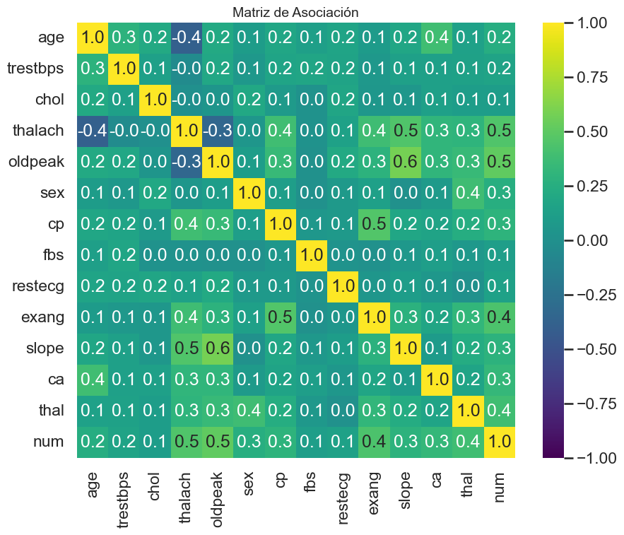
En base a nuestro estudio de de predictores tenemos una primer aproximación de los vairalbes más influyentes en nuestra variable objetivo, por lo que hemos decidido usar las varibles: ‘sex’, ‘exang’, ‘cp’, ‘oldpeak’ y además ‘age’, ‘cho’ para la realización del EDA
EDA#
df = df.rename(columns={'num': 'target'})
num_counts = df['target'].value_counts()
num_labels = num_counts.index
plt.figure(figsize=(12,5))
# 1️⃣ Countplot
plt.subplot(1,2,1)
sns.countplot(x='target', data=df, hue='target', palette='viridis', legend=False)
plt.title("Conteo de pacientes por clase 'Diagnóstico'")
plt.xlabel("Diagnóstico")
plt.ylabel("Cantidad")
# 2️⃣ Treemap
plt.subplot(1,2,2)
# Crear etiquetas que incluyan el nombre de la clase y el porcentaje
total = sum(num_counts)
labels = [f'{label}\n({count})\n{count/total:.1%}' for label, count in num_counts.items()]
colors = sns.color_palette('viridis', len(num_counts))
squarify.plot(sizes=num_counts.values,
label=labels,
color=colors,
alpha=0.8,
text_kwargs={'fontsize':10})
plt.title("Proporción de pacientes por 'Diagnóstico' (Treemap)")
plt.axis('off') # Ocultar los ejes
plt.tight_layout()
plt.show()
plt.tight_layout()
plt.show()
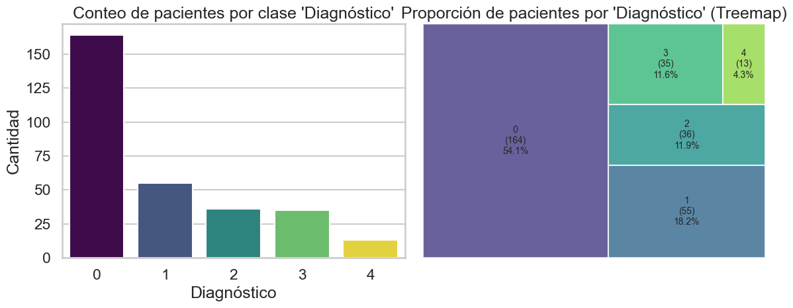
<Figure size 640x480 with 0 Axes>
Observamos que más del 50% de nuestra población se encuentra sana y no padece de cardiopatía. Solo el 4.3% (al rededor de 12) de las personas padecen de cardiopatía grave. Y casi el 20% se encuentra con cardiopatía con el nivel más bajo de gravedad, este es el tipo de cardiopatía más frecuente entre las personas de nuetro estudio.
Debido a la baja proporción de personas diagnosticadas con cardiopatía, agruparemos las clases ‘1’, ‘2’, ‘3’, y ‘4’. Nuestra variable objetivo cuenta con 5 categorías:
0 si está sana
1, 2, 3 y 4 indican la gravedad de la cardiopatía (Entre más alto más grave).
Simplificaremos dicha variable para indicar:
0 si está sana
1 si padece cardiopatía
df['target'] = df['target'].apply(lambda x: 0 if x == 0 else 1)
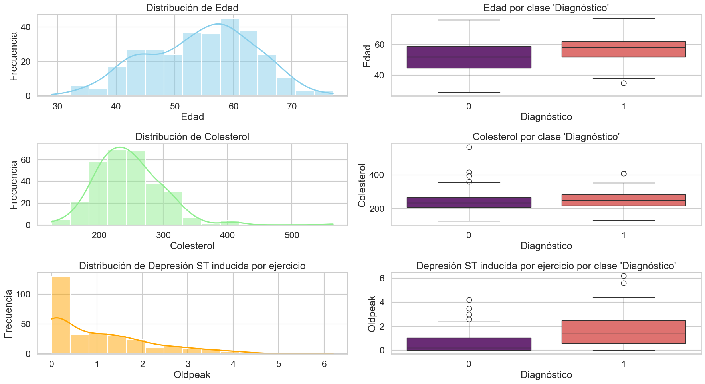
Age: Nuestra población de edad se encuentra concentrada mayormente entre los 50 y 65 años aproximadamente, siento las edades que tienden por la izquierda a 60 con mayor representación. Además encontramos que para las personas diagnosticadas con cardiopatía suelen tener más de 40 años, pero esto puede ser por la poca representación de personas menores de 40 años en el estudio
Colesterol: Para el colesterol tenemos los valores concentrados aproximadamente entre 100 y 350 aproximadamente, contando con raras ocasiones donde una persona tiene el colesterol por más de 350. Además, para las personas que padecen cardiopatía la mitad de estas personas tiene ligeramente mayores niveles de coesterol, aunque no hay grande variabilidad entre las personas que padecen colesterol y las que no.
Oldpeak: Observamos que la depresión del segmento ST inducida por el ejercicio en relación con el reposo, tiene un sesgo hacía la derecha. Siento la moda de este valor entre 0 y 0.3. Además, para las personas que padecen cardiopatía son más probables a tener mayor depresión en el segmento ST inducida por el ejercicio respecto al reposo.
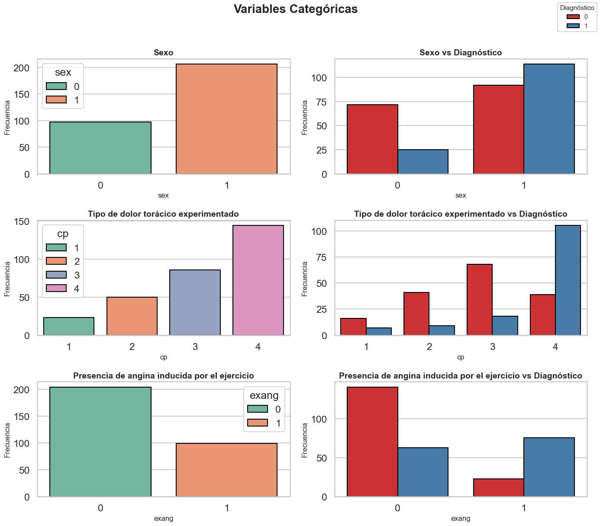
Sex: Observamos que dentro del estudio existe el doble de mujeres que de hombres. Además que es más probable que una mujer padezca cardiopatía, pero esto puede ser sesgado por la diferencia en la clase mayoritaria de las mujeres.
Tipo de dolor toracico (cp): El tipo de dolor toracico más experimentado es el tipo 4 y a su vez las personas, que padecen de este dolor con mayor frecuencia padecen cardiopatía tambien. Mientras que para los otros tipo de dolores, es menos probable que padezcan cardiopatia en base a este dolor.
Presencia de angina inducida por ejercicio (Exang): En nuestra muestra existe el doble de personas que no tuvieran presencia de angina durante el ejercicio. Además, podemos notar que si una persona tiene la presencia de esta angina durante el ejercicio es más probable que padezca de cardiopatía.
Preprocesamiento#
categorical_vars = ['cp', 'exang', 'slope', 'thal', 'ca']
numeric_vars = ['oldpeak', 'age', 'trestbps', 'chol', 'thalach']
target = "target"
X = df[categorical_vars + numeric_vars]
y = df[target]
# División en train/test
X_train, X_test, y_train, y_test = train_test_split(
X, y, test_size=0.2, random_state=42, stratify=y
)
# Preprocesamiento
preprocessor = ColumnTransformer(
transformers=[
("cat", OneHotEncoder(handle_unknown="ignore"), categorical_vars),
("num", StandardScaler(), numeric_vars)
]
)
Modelo#
pipeline = Pipeline(steps=[
('preprocessing', preprocessor),
('classifier', GaussianNB())
])
pipeline.fit(X_train, y_train)
y_pred = pipeline.predict(X_test)
# Evaluación
print("Accuracy:", accuracy_score(y_test, y_pred))
print("\nReporte de clasificación:\n", classification_report(y_test, y_pred))
print("\nMatriz de confusión:\n", confusion_matrix(y_test, y_pred))
Accuracy: 0.8852459016393442
Reporte de clasificación:
precision recall f1-score support
0 0.96 0.82 0.89 33
1 0.82 0.96 0.89 28
accuracy 0.89 61
macro avg 0.89 0.89 0.89 61
weighted avg 0.90 0.89 0.89 61
Matriz de confusión:
[[27 6]
[ 1 27]]
from sklearn.model_selection import cross_val_score
cv_scores = cross_val_score(pipeline, X, y, cv=5, scoring='accuracy')
print("=== Validación cruzada ===")
print("Accuracy promedio:", cv_scores.mean().round(3))
print("Desviación estándar:", cv_scores.std().round(3))
=== Validación cruzada ===
Accuracy promedio: 0.828
Desviación estándar: 0.025
# Probabilidades de predicción en test
y_proba = pipeline.predict_proba(X_test)[:, 1] # solo la clase positiva
# Curva ROC
fpr, tpr, thresholds = roc_curve(y_test, y_proba)
roc_auc = roc_auc_score(y_test, y_proba)
plt.figure(figsize=(7, 6))
plt.plot(fpr, tpr, color='blue', label=f'ROC curve (AUC = {roc_auc:.2f})')
plt.plot([0, 1], [0, 1], color='gray', linestyle='--')
plt.xlabel('Tasa de falsos positivos (FPR)')
plt.ylabel('Tasa de verdaderos positivos (TPR)')
plt.title('Curva ROC - GaussianNB')
plt.legend(loc="lower right")
plt.show()
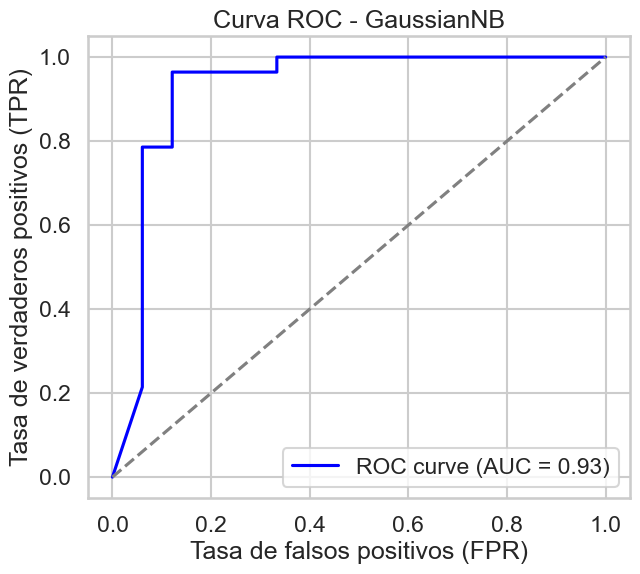
# Distribución de probabilidades predichas
plt.figure(figsize=(7, 6))
sns.histplot(y_proba[y_test == 0], bins=10, color='red', alpha=0.6, label='Clase 0 (Sano)')
sns.histplot(y_proba[y_test == 1], bins=10, color='green', alpha=0.6, label='Clase 1 (Enfermo)')
plt.xlabel("Probabilidad predicha de enfermedad")
plt.ylabel("Frecuencia")
plt.title("Distribución de probabilidades - GaussianNB")
plt.legend()
plt.show()
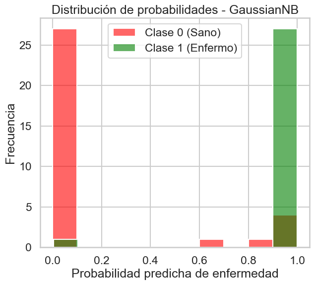
Comparación con BernoulliNB y Logistic Regression#
Pipelines#
--- Tabla Comparativa de Nuevos Clasificadores ---
| Model | Accuracy | Recall | F1-Score | AUC | |
|---|---|---|---|---|---|
| 0 | Logistic Regression | 0.918033 | 0.964286 | 0.915254 | 0.971861 |
| 1 | Bernoulli Naive Bayes | 0.901639 | 0.964286 | 0.900000 | 0.977273 |
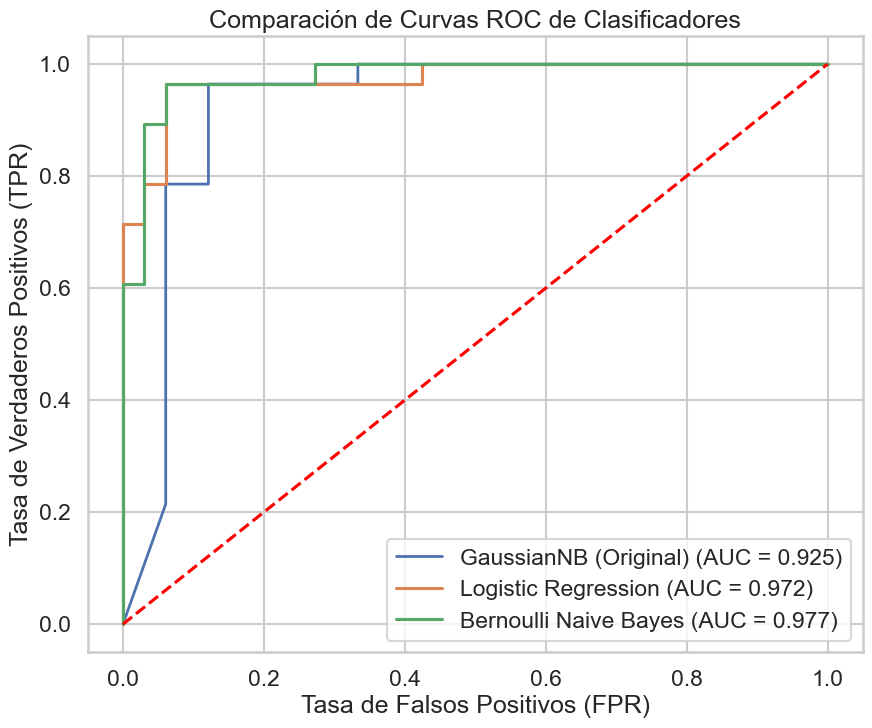
Análisis y reporte#
Relevancia de variables numéricas en Gaussian Naive Bayes (basado en la diferencia de medias)
Feature Mean_Sano (Clase 0) Mean_Enfermo (Clase 1) Mean_Difference
4 thalach 0.376924 -0.444838 0.821761
0 oldpeak -0.360977 0.426018 0.786994
1 age -0.192996 0.227770 0.420767
2 trestbps -0.125267 0.147837 0.273104
3 chol -0.071054 0.083857 0.154912
Dumbell Plot de Variables relevantes#
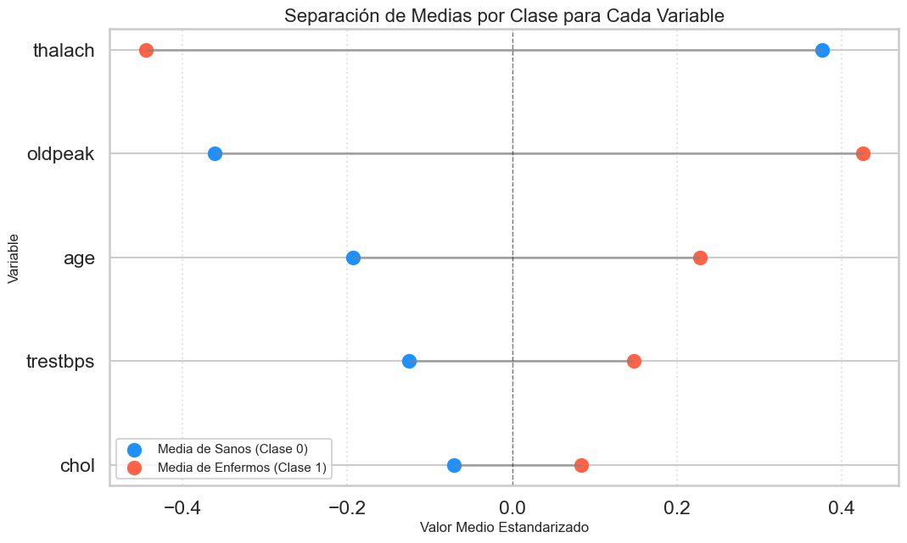
Ranking de Relevancia Predictiva: Gaussian Naive Bayes#
Variables Críticas#
1. thalach (Freq. Cardíaca Máxima) - Mean_Diff: 0.82
Sanos: +0.37 (capacidad superior) vs Enfermos: -0.44 (capacidad reducida)
Reserva cardíaca como biomarcador primario
2. oldpeak (Depresión ST) - Mean_Diff: 0.78
Sanos: -0.36 (respuesta normal) vs Enfermos: +0.42 (isquemia evidente)
Anomalías electrocardiográficas bajo esfuerzo
Variables Secundarias#
3. age (Edad) - Mean_Diff: 0.42
Gradiente etario predecible: jóvenes sanos (-0.19) vs mayores enfermos (+0.22)
Variables Débiles#
4-5. trestbps/chol (Presión/Colesterol) - Mean_Diff: 0.15
Separación marginal entre clases
Observación crítica: Factores de riesgo tradicionales menos predictivos que respuesta al ejercicio
Insight Clínico Clave#
El modelo prioriza métricas de rendimiento dinámico (thalach, oldpeak) sobre factores de riesgo estáticos (presión, colesterol). Sugiere que la capacidad funcional del corazón es más diagnósticamente informativa que parámetros basales.
Implicación: Para screening cardíaco, las pruebas de esfuerzo aportan más valor predictivo que paneles lipídicos rutinarios.
Análisis del modelo Logistico#
# Código para analizar la relevancia en LogisticRegression
# Extraemos el clasificador y el preprocesador
lr_classifier = pipeline_lr.named_steps['classifier']
lr_preprocessor = pipeline_lr.named_steps['preprocessing']
# Obtenemos TODOS los nombres de las características después de la transformación
feature_names = lr_preprocessor.get_feature_names_out()
# Creamos un DataFrame de coeficientes
coeffs_df = pd.DataFrame({
'Feature': feature_names,
'Coefficient': lr_classifier.coef_[0]
})
coeffs_df['Abs_Coefficient'] = np.abs(coeffs_df['Coefficient'])
coeffs_df = coeffs_df.sort_values(by='Abs_Coefficient', ascending=False)
print("\nRelevancia de variables en Regresión Logística (basado en coeficientes)")
print(coeffs_df.head(10))
Relevancia de variables en Regresión Logística (basado en coeficientes)
Feature Coefficient Abs_Coefficient
12 cat__ca_0.0 -1.450069 1.450069
11 cat__thal_7.0 1.008484 1.008484
3 cat__cp_4 1.005580 1.005580
9 cat__thal_3.0 -0.758058 0.758058
15 cat__ca_3.0 0.649955 0.649955
2 cat__cp_3 -0.580726 0.580726
7 cat__slope_2 0.570794 0.570794
14 cat__ca_2.0 0.504466 0.504466
13 cat__ca_1.0 0.476347 0.476347
0 cat__cp_1 -0.389864 0.389864
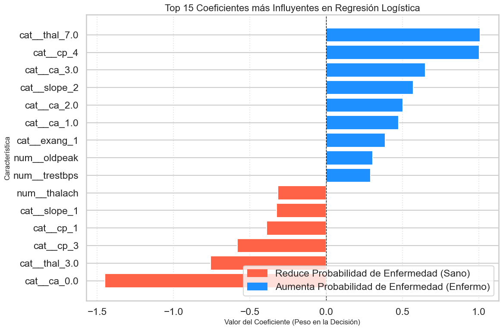
Análisis de Coeficientes: Regresión Logística#
Top Predictores por Magnitud#
Protectores Potentes (Coef. Negativo):
cat__ca_0.0(-1.45): Cero vasos obstruidos = indicador más fuerte de salud cardíacacat__thal_3.0(-0.75): Perfusión normal en prueba taliocat__cp_3(-0.58): Dolor torácico atípico (menos preocupante que tipo 4)
Factores de Riesgo Críticos (Coef. Positivo):
cat__thal_7.0(+1.00): Defecto reversible en perfusión miocárdicacat__cp_4(+1.00): Dolor asintomático con hallazgos anórmalescat__slope_2(+0.57): Respuesta ST plana al ejercicio
Contraste Metodológico#
Logística vs Naive Bayes:
Logística: Prioriza categorías diagnósticas específicas (ca, thal, cp)
Naive Bayes: Enfocado en métricas de rendimiento continuas (thalach, oldpeak)
El modelo logístico revela jerarquía diagnóstica realista: obstrucción coronaria (ca) como gold standard, seguido de pruebas de perfusión (thal) y manifestaciones clínicas (cp).
Conclusiones#
Fortalezas de Bayes operacionales:
Simplicidad computacional + robustez predictiva
Recall (96%): Minimiza falsos negativos críticos
Limitación teórica fundamental:
Supuesto de independencia entre variables médicas irreal. En medicina, es poco realista asumir que métricas como oldpeak (depresión ST) y thalach (frecuencia cardíaca) son completamente independientes.
Convergencia Interpretativa#
Naive Bayes: Prioriza respuesta fisiológica al esfuerzo (thalach, oldpeak) Regresión Logística: Enfatiza hallazgos diagnósticos categóricos (ca, thal, cp)
Ambos modelos identifican mismos factores clave por rutas diferentes.
Aplicabilidad Médica#
Limitaciones éticas: Herramienta de apoyo, nunca sustituto del criterio clínico
El Modelo bayesiano ofrece valor clínico inmediato como sistema de alerta temprana, balanceando simplicidad operacional con performance diagnóstica robusta.